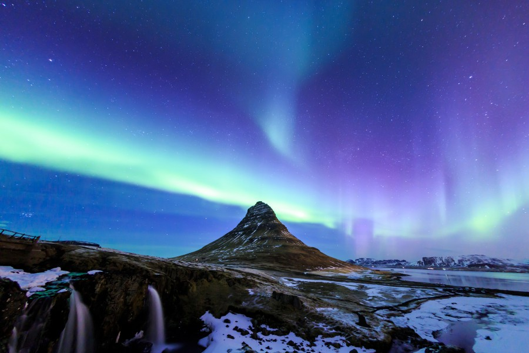
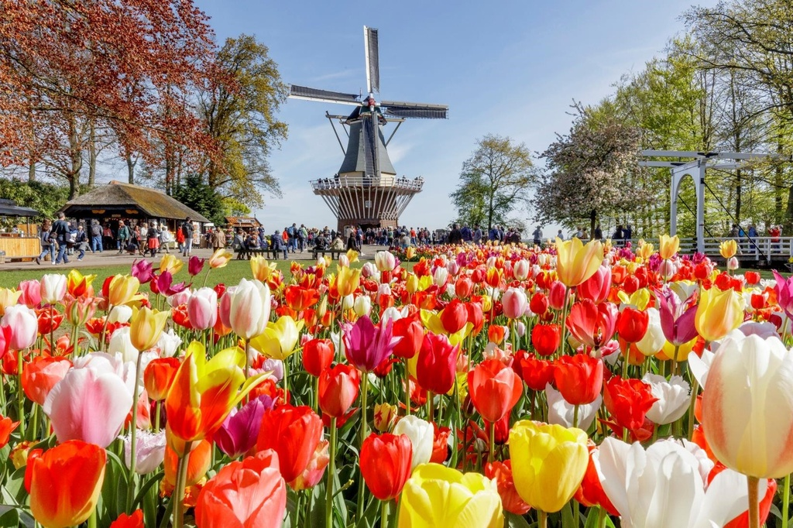

padding-top: 60px;
旅人日常
首頁
亞洲地區
歐洲地區
美洲地區
非洲地區
關於我們
熱門景點
🔍
富士山
富士山是日本最具代表性的地標之一，也是世界文化遺產。標高3776公尺，四季皆展現不同風貌：春天櫻花相映、夏天適合登山、秋天楓葉環繞、冬天白雪覆蓋宛如仙境。
不論是遠觀拍照還是親自登頂，都能感受到大自然的壯麗與震撼。
北海道滑雪
北海道以細緻柔軟的「粉雪」聞名全球，是滑雪愛好者的天堂。這裡擁有多個世界級滑雪場，如二世谷（Niseko）、旭山雪之村 (Asahiyama Snow Village)等，無論是初學者還是專業玩家都能找到適合的雪道。
除了滑雪，還可以體驗溫泉、美食與浪漫雪景，讓冬季旅程更加豐富難忘。
冰島極光

冰島是觀賞極光的最佳地點之一，每年冬季都有機會看到夢幻般的綠色光帶在夜空中舞動。遠離城市光害的環境，讓極光更加清晰壯觀。
除了極光，冰島還有火山、冰川、瀑布與黑沙灘等壯麗景觀，是結合自然奇觀與冒險體驗的理想旅遊地。
荷蘭花季

荷蘭花季（通常在 3月中旬至5月中旬）是全球最著名的春季盛事，以鬱金香為核心，特別是每年3月底至5月初開放的庫肯霍夫花園 (Keukenhof)，展示超過700萬株球莖花卉，展現萬紫千紅的壯觀花海。
建議在4月中旬前往，能看到盛開的花田，也是遊覽荷蘭的最佳時節。
埃及金字塔
埃及吉薩人面獅身像（Great Sphinx of Giza）是世界上最古老、巨大的單體雕像之一，位於卡夫拉金字塔旁，長約73.5公尺、高約20公尺，由石灰岩雕刻而成。
一般認為其建造於公元前2500年左右的法老卡夫拉時期，象徵著法老神聖的智慧與力量，是金字塔群的守護者。
德州休士頓太空中心
德州休士頓太空中心（Space Center Houston）是NASA約翰遜太空中心（Johnson Space Center）的官方遊客中心，是探索美國載人航太歷史的必訪景點。
該中心展示超過400件太空文物，包括阿波羅任務控制中心、土星五號火箭、太空梭複製品及真實月球岩石。